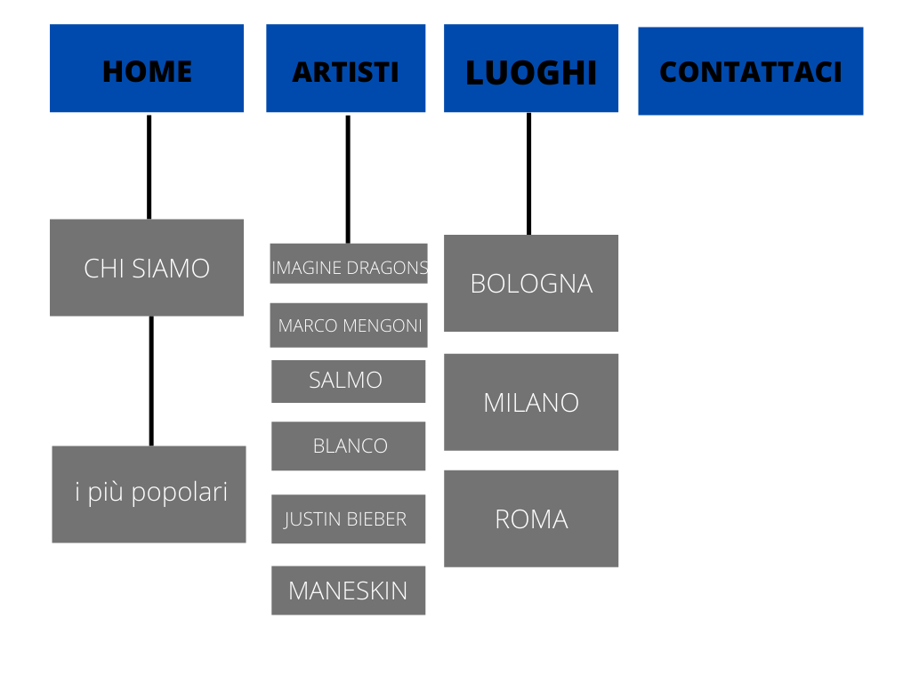

DOCUMENTAZIONE
• Abstract
Concertsmates è un sito che ho scelto di creare in quanto spesso mi sono confrontata con amici che decidevano di non partecipare a un concerto perché non volevano vivere l’esperienza da soli. Le amicizie create online, soprattutto per le nuove generazioni, ormai fanno parte della quotidianità e un sito appositamente nato per vivere insieme la musica dal vivo sembrava un’idea innovativa. Il sito web è stato creato affinché risulti semplice e intuitivo da navigare e con un buon impatto visivo.
• Project management Plan
Benchmarking
1. ObiettiviL’obiettivo principale del sito è quello di aiutare le persone che vogliono partecipare a un concerto a trovare la compagnia giusta per farlo senza essere obbligati a doverci rinunciare per paura di andare da soli. Le tappe da raggiungere sono state: coerenza nelle informazioni e nel layout, intuitività nell’utilizzo dei vari elementi e creazione di elementi grafici conformi in tutte le pagine del sito.
2. Target utenteIl target utente di riferimento, vista la scelta degli artisti proposti, è quello degli adolescenti e giovani adulti.
3. CompetitorsPrima della creazione del sito ho svolto una ricerca per vedere se esistessero già siti di questo genere ma la risposta che ho trovato è risultata negativa. Confrontandomi anche con amici ho notato come la pratica di creare amicizie nuove per andare ad un concerto si svolgeva attraverso i social network quali facebook e twitter ma spesso senza trovare risposta.
Per creare la grafica del sito ho preso spunto da ticketone ossia il sito di vendita di biglietti online più utilizzato in Italia. Ho trovato numero pregi quali ad esempio la completezza dei contenuti e la qualità, una coerenza grafica e cromatica con il ripetersi del blu e del bianco. Il difetto più grande del sito risulta la dispersività dei contenuti soprattutto nella homepage che presenta troppi elementi e non permette una veloce intuitività nell’utilizzo.
Un altro sito per la vendita di biglietti è ticketmaster che, a differenza di ticketone, presenta più intuitività nell’utilizzo dei contenuti e meno dispersività. Il difetto più grande risulta essere la presenza di meno scelta di eventi rispetto ai suoi competitors e la confusione nella homepage tra eventi musicali e sportivi.
• Struttura e layout
1. Architettura del sito
FIG 1: Architettura ad albero
2. Wireframe

FIG 2: Wireframe della home
FIG 3: Wireframe pagina artisti
FIG 4: Wireframe pagine luoghi
FIG 5: Wireframe pagina contattaci
3. Scelte GrafichePer quanto riguarda le scelte grafiche, nella homepage ho utilizzato un carosello di immagini per catturare l’attenzione degli utenti e i colori nero per il menu e il background degli elementi per dare eleganza e riprendere l’atmosfera dei concerti e una tonalità di bianco (#E9E7E9) come sfondo per dare contrasto al nero. Tutte le pagine presentano una grafica semplice per permettere una navigazione veloce e intuitiva.
Il font principale del sito, Titillium Web, è stato utilizzato per la componente testuale affinché la lettura su schermo sia più agevole, con una differenza di grandezza per i titoli per richiamare più l’occhio degli utenti. Il font utilizzato nella homepage è playfair display per dare più grazia e eleganza al testo.
Ho scelto inoltre di impostare un menù che fosse il più semplice e lineare possibile in modo da permettere al fruitore del sito di navigare in maniera semplice e chiara.
La transizione cromatica al passaggio del mouse sulla maggior parte dei “link” richiama l’attenzione dell’utente incentivando l’interattività.
• Linguaggi e strumenti
1. LinguaggiHo utilizzato HTML e CSS come linguaggi per la creazione del sito.
2. Strumenti-SublimeText2 come text editor
-Google Fonts per i fonts
-Adobe Color per le palette dei colori
-Bootstrap per i comandi “navbar",“carousel”, “cards” e “footer”, che sono usati per la barra del menu, l’effetto “slider" delle foto e le cards presenti nella quasi totalità delle pagine
-GoogleMaps per indicare i luoghi degli eventi
- W3school per l’elemento nella pagina contattaci
-Google Analytics per le visualizzazioni del sito
-GitHub per la sua pubblicazione.
Le immagini utilizzate sono state prese tutte dal sito Unplash che permette una condivisione gratuita.
• Communication Strategy Plan
1. Background e Obiettivi comunicativi
Il sito a differenza dei suoi competitors, si focalizza soprattutto sulla conoscenza di nuove persone per andare insieme a un concerto e non sulla vendita dei biglietti per tali eventi. È un sito innovativo nel suo genere che risulta complementare e preliminare ai siti di vendita di biglietti online. Attraverso i gruppi telegram creati per ogni tappa di un artista nelle tre principali città italiane si avrà la possibilità di conoscere nuove persone e condividere insieme una serata e magari creare anche nuove amicizie. Inoltre attraverso le mappe presenti nelle pagine riservate ai luoghi, si ha la possibilità di vedere immediatamente il luogo dove si svolgerà il concerto senza dover andare personalmente a cercare.
2. Target audience
Il target a cui è indirizzato il sito, grazie agli artisti proposti, è quello degli adolescenti e giovani adulti ed è raggiunto tramite la condivisione con i social media che risultano di primaria importanza per l’obiettivo che il sito vuole raggiungere.
3. Promozione
La promozione verrà fatta tramite social network, in particolare Whatsapp e Twitter. Quest’ultimo in particolare spesso è veicolo di conoscenza tra persone che non si conoscono e che hanno gli stessi interessi musicali quindi è il social più adatto per la promozione del sito.
4. Valutazione dei risultati
In aggiornamento